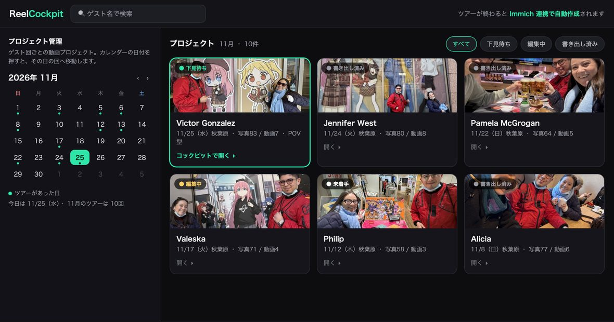
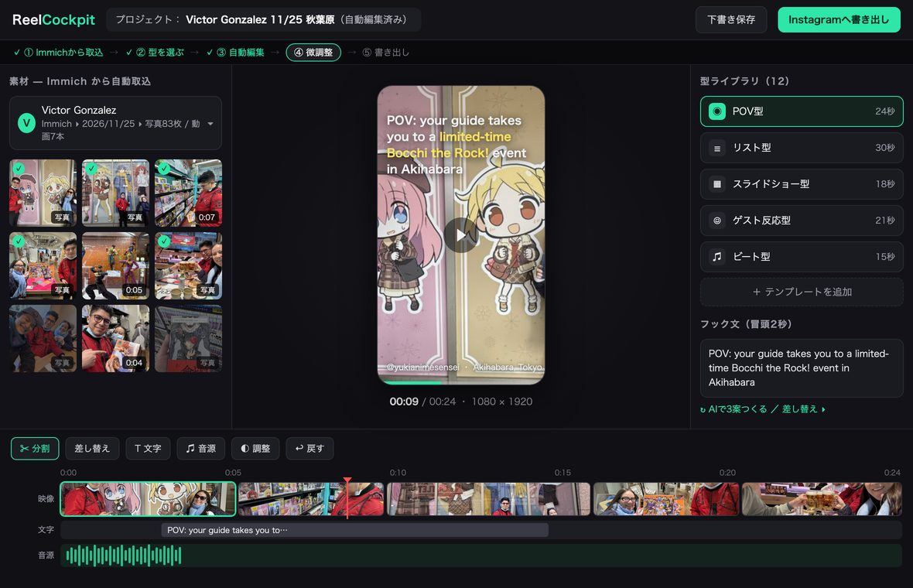
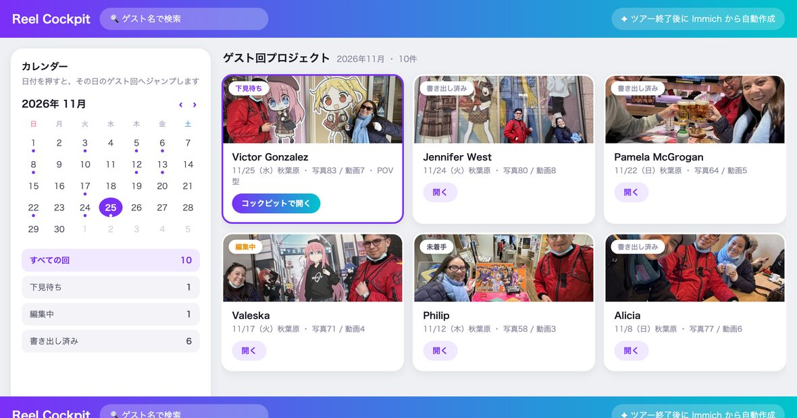
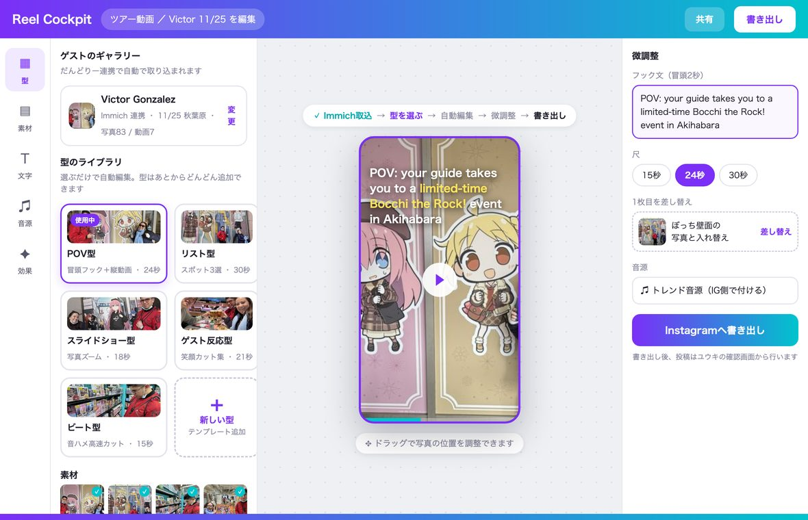
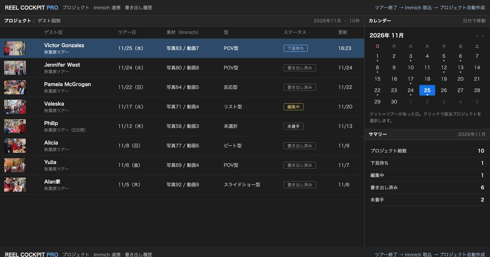
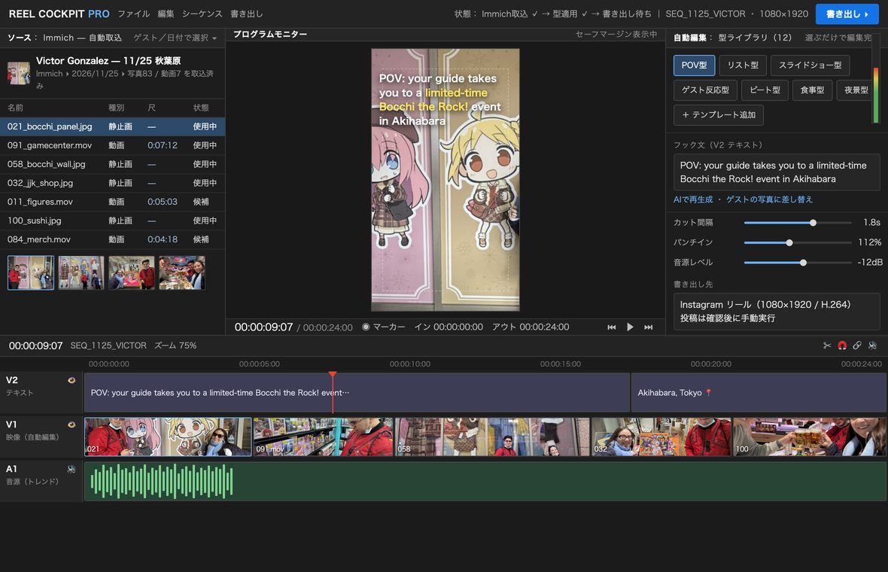
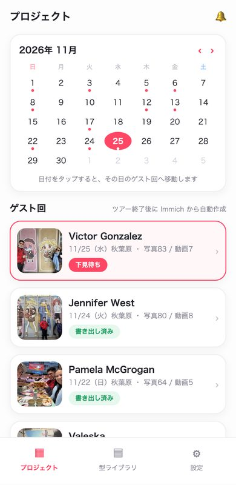
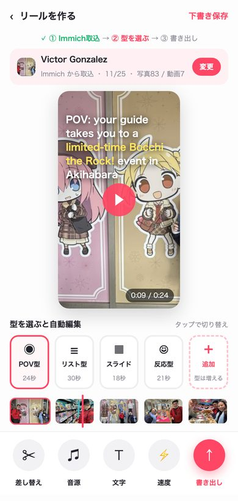
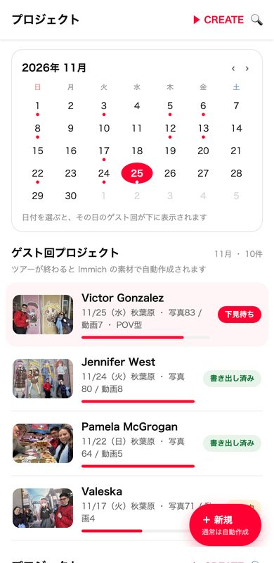
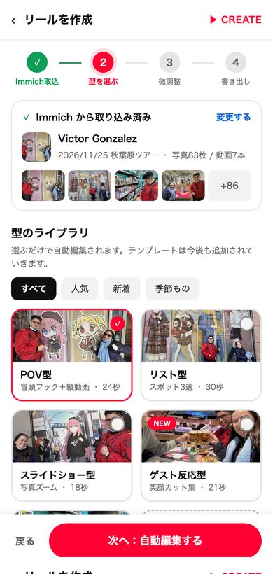

REEL COCKPIT — DESIGN BOARD
リール自動編集コックピット
デザイン5案
ツアーが終わると Immich の素材からゲスト回ごとの動画プロジェクトが自動で立ち上がり、型を選ぶだけでリールが自動編集されるコックピットの画面案。各案とも「管理画面（プロジェクト＋カレンダー）」→「編集画面（コックピット）」の2層構成。写真は Victor Gonzalez 回（11/25・秋葉原）の実素材。
全案共通の前提
- 入力は Immich 流し込み：ゲスト／日付を選ぶと、その回の写真・動画が自動で流れ込む（端末アップロードではない）
- 少ない手順：素材が入る → 型を選ぶ → 自動編集 → 微調整 → 書き出し
- 型は増やせる：テンプレートはライブラリとして並び、追加枠からどんどん増やせる設計
- ゲスト回別に管理：プロジェクトはカレンダー（月グリッド）の日付からも探せる
- 書き出し後の Instagram 投稿は、ユウキの確認画面から手動実行
1CapCut 風ダーク／タイムライン型
管理画面

プロジェクト管理はダーク基調。左に月カレンダー（ツアーがあった日にドット、25日を選択中）、右にゲスト回カードがステータスの色ドット付きで並ぶ。日付タップでその日の回へ移動。
編集画面

大きな 9:16 プレビュー＋下部タイムラインの王道編集画面。左に Immich から自動取込された素材、右に型ライブラリ（追加ボタン付き）とフック文の編集。上部の手順バーで現在地（④微調整）が常時分かる。
2Canva 風明るい／テンプレート先行
管理画面

明るいカードグリッドでプロジェクトを一覧。左にカレンダーとステータス絞り込み（すべての回／下見待ち／編集中／書き出し済み）。選択中の回は紫枠＋「コックピットで開く」ボタン。
編集画面

左パネルが型のライブラリそのもの。サムネ付きテンプレートカードと「新しい型」の追加枠が並び、選ぶだけで中央キャンバスに自動編集結果が出る。右で尺・差し替え・フック文を微調整。ドラッグ＆ドロップ感のある配置。
3プロ編集 風Premiere 系／高密度
管理画面

プロジェクトは一覧テーブル（ゲスト回／ツアー日／素材数／型／ステータス／更新）。右にカレンダーと月のサマリー。情報量が多く、回数が増えても一覧性が高い。
編集画面

ソースモニター（Immich 素材リスト）／プログラムモニター／V2・V1・A1 の多トラックタイムライン。型は右上のチップで切り替え、スライダーでカット間隔やパンチインを細かく詰められる本格派。ただし操作は他の案より多い。
4InShot／VN 風スマホ特化／大きなボタン
管理画面

スマホ前提のプロジェクト管理。上部タブで「プロジェクト／カレンダー」を切り替え、カレンダーの日付タップでその日の回だけに絞り込まれる。下部タブに型ライブラリも常駐。
編集画面

プレビュー中心の1画面。型は横並びチップ（追加枠つき）でタップ切り替え、操作は大きな丸ボタンだけ（差し替え／音源／文字／速度／書き出し）。手順は上部の3ステップ表示。スマホで片手で完結する。
5YouTube Create 風ステップ式ウィザード
管理画面

カレンダーカードを上に置き、その下に進捗バー付きのプロジェクト行が並ぶ。ツアーが終わると自動作成されることが明示され、「＋新規」は通常は自動作成であることも添えている。
編集画面

上部ステッパーで「1 Immich取込 → 2 型を選ぶ → 3 微調整 → 4 書き出し」を1画面ずつ進むウィザード型。今の画面は型ライブラリ（カテゴリタブ付きグリッド＋追加枠）。迷いようがない代わりに、行き来はステップ順になる。
※ これはデザイン案のモックです（本実装はしていません）。素材写真は Victor Gonzalez 回のギャラリー実写真を使用。Instagram への実投稿は全案とも書き出し後の確認ステップを前提にしています。